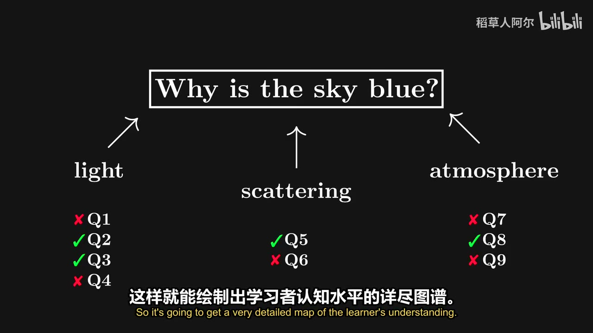

原视频 · 在线回看
点击后联网加载 B 站播放器；本地不下载整段视频。

原视频 · 在线回看
点击后联网加载 B 站播放器；本地不下载整段视频。
原标题：我如何利用AI 学习事物 - Eero Alvar
UP 主：稻草人阿尔
时长：两个版本合计 38 分 05 秒
链接：https://www.bilibili.com/video/BV1w6Ha6QEUY/
阅读强度：标准
想学一个新主题时，我们往往面临两个问题：不知道自己已经掌握了哪些前置知识，也不知道一大堆材料应该从哪里开始。假设我们想理解微分形式，可能见过积分、向量或电磁学，却不清楚这些知识分别够不够支撑下一步。让 AI 从头讲一大段，也许能得到一份看似完整的说明，但学习者未必来得及消化每一步。
Eero Alvar 分享了一套正在摸索的个人教学系统：先用问题了解学习者目前的理解，再生成学习路径，之后逐步解释并穿插测验。他用自己学习微分形式的过程展示这个设计。两个分集分别是配音和原声版本，讲述同一套案例。
一本教材或一门课通常面向许多读者，每个人的起点可能不同。同一段解释对一些人来说已经熟悉，对另一些人又可能跳过了必要基础。系统的设计目标，是先估计当前掌握的内容，再选择学习者能够接上的下一步。这里的“路径”包括先后学习哪些概念，也包括每个概念怎样解释。
学习者往往还会同时使用书、课程和其他来源。不同材料可能使用不同符号和讲解习惯，切换时需要重新适应。这个系统希望用较熟悉的教学界面组织来自多个来源的内容，让学习者把更多精力用在理解上。
AI 要呈现不同来源，需要找到相关材料、明确出处并比较观点；系统因此把核验和事实检查放进设计之中。
要安排适合某个人的教学，系统先要了解这个人知道什么。示例使用测验工具提出选择题，从较宽的问题开始，再根据回答继续追问，尝试找到已掌握内容和需要补充内容之间的边界。分享者用“类似二分搜索”形容这种逐渐缩小范围的过程：问题回答后，下一题再根据已有反馈选择方向。
这张理解图只能根据提出的问题和回答估计。答对一道题可能来自猜测，答错也可能是题意没有看清；因此，除了选择选项，解释自己的推理很有帮助。学习者还可以提前告诉系统自己熟悉哪些内容，让后续问题更贴近实际起点。测验提供的是可以继续修正的线索。
在微分形式的例子里，摸底从线积分、向量场散度等问题进入，也问到狭义相对论中不同参考系下电场和磁场的关系。遇到后一个问题时，学习者选择直接回答“不知道”，系统给出参考答案，让这里需要补充解释的地方显现出来。
系统根据摸底结果安排教学顺序，并以 Mermaid 图表展示。Mermaid 是一种用文本描述图表的方式；在这个例子里，图表用来呈现学习路线和概念之间的关系，让学习者看到当前在哪、接下来准备去哪里。分享者也希望通过要求系统列出结构，促使它把计划写得更明确。
图表让计划可以被讨论：如果某一步缺少必要基础，或两个概念的关系有误，学习者可以指出具体位置并要求调整。系统同时启动核验任务。
实际运行时，终端里的图表没有如预期显示，于是学习者在 Obsidian 中查看。另一个扩展把会话内容关联到 Markdown 文件，使输出可以留作记录，并在阅读界面中显示公式。这个组合服务于一个具体需要：学习结束后，仍能回看路径、问题和解释。软件、扩展及其显示能力取决于所用版本与设置。
正式教学时，系统沿计划引入概念，每次只推进一个推理步骤。这样学习者可以在下一步之前提问、表达自己的理解，再让系统给出练习。测验有三项用途：帮助学习者发现自己以为懂了、实际还说不清的地方；把反馈交给系统调整后续解释；让新知识在应用中得到练习。
在这次示例中，系统介绍余向量和相关记号，随后提出应用题并配图。学习者可以看解释、作答，再继续进入余向量场等内容。图示由系统生成并预览，期间绘图任务还出现过超载错误。
这次展示在接近广义斯托克斯定理时结束，并没有走完整张依赖图，也没有展示学习者已经精通微分形式。它的具体价值在于让我们看到教学系统怎样组织一段学习过程：先问基础，再给出计划，解释一步后收集反馈。系统的计划是否合适、测验是否有效，仍需要在更长时间的学习和独立检验中判断。